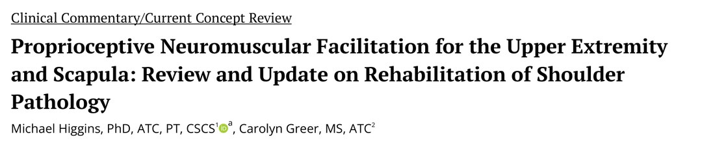
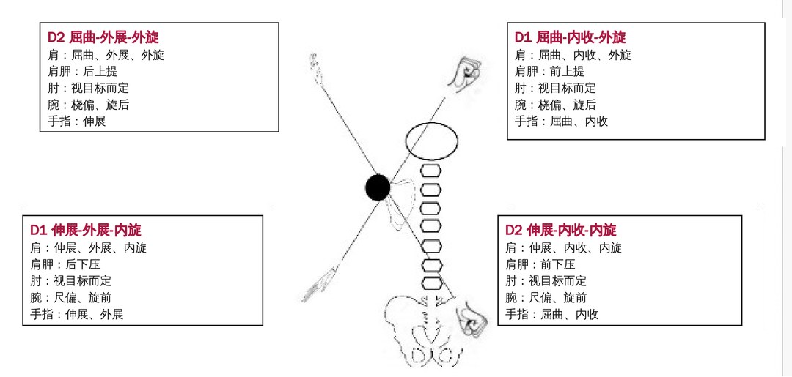
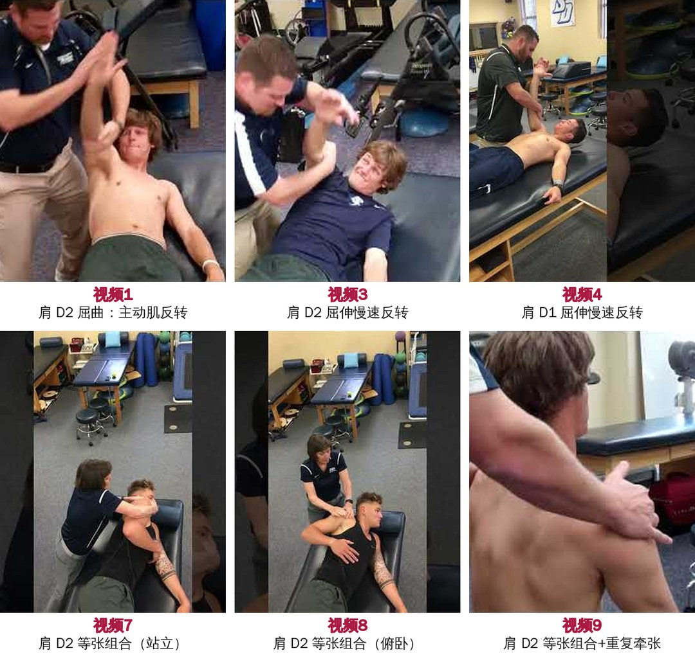
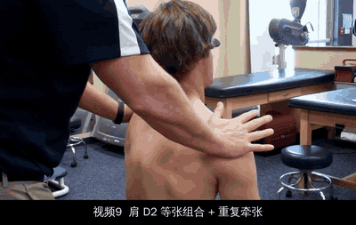
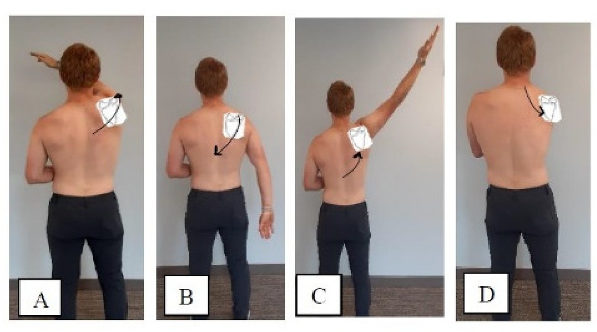
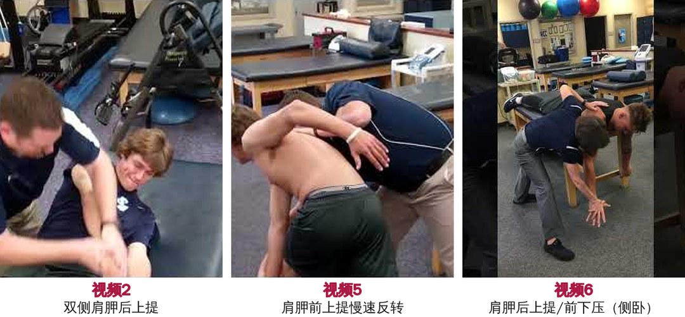

🔖原文首页（IJSPT 2025 年第 20 卷第 9 期）
📚 文献卡片
▪ 英文原题：Proprioceptive Neuromuscular Facilitation for the Upper Extremity and Scapula: Review and Update on Rehabilitation of Shoulder Pathology（上肢与肩胛的本体感觉神经肌肉促进技术：肩部疾病康复的回顾与更新）
▪ 作者：Michael Higgins, PhD, ATC, PT, CSCS · Carolyn Greer, MS, ATC
▪ 机构：弗吉尼亚大学运动机能学系 · 圣地亚哥大学体育部
▪ 期刊：International Journal of Sports Physical Therapy（IJSPT）
▪ 年卷期：2025;20(9):1407-1420
▪ PMCID：PMC12404573
▪ 文章类型：临床评论 / 现代概念综述（Clinical Commentary / Current Concept Review）
▪ 证据级别：5 级
▪ 关键词：PNF · scapula · shoulder pathology
本体感觉神经肌肉促进技术（PNF）源于神经康复，后来广泛用于骨科康复和运动表现。它包括拉伸和强化两大类，本文只讨论强化。
"Techniques that do not incorporate all the original principles and guidelines as described in the literature are often miscategorized as PNF."
"那些没有完整遵循原始原则和指南的技术，常常被错误地归类为 PNF。"
• Sherrington：提出“扩散（irradiation）”，即刺激引起的反应会扩散到协同肌和整个运动模式
• Kabat：在治疗脊髓灰质炎患者时研究自然的运动模式，提出“本体感觉促进”；他认为结合牵张反射和反牵张反射、采用特定组合动作，比单关节单平面动作更有效
• Knott 和 Voss：1950 年代 Voss 加上“神经肌肉”一词，三人共同发展出今天的 PNF 技术
• 1970 年代末：PNF 强化技术进入康复和体能训练
本文的重点是：如何正确使用 PNF 强化练习，恢复/维持盂肱关节与肩胛之间的协同关系，并给出训练顺序、参数和证据。
| 内容 | 要点 |
|---|---|
| 理念 | 以整个人为对象，正向、功能化，调动潜能（扩散原则），符合 ICF 模型 |
| 关键原则 | 教会模式、看着移动的肢体、口令配合、蚓状肌握法、身体在对角线平面内、旋转最关键……共 11 条 |
| 技术 | 节律性启动、动态（慢速）反转、主动肌反转（等张组合）、慢速反转-保持、节律性稳定 |
| 模式 | 上肢 D1/D2 屈伸 4 个对角线；肩胛前上提/后下压、后上提/前下压 |
| 参数 | 10～20 次（每个动作最多 30 次），≥3 次/周，6～12 周逐步加量 |
一句话概括：对角线、带旋转、肩胛和上肢一起练，才是真正的 PNF。
文中用 SORT（推荐强度分级）给出证据等级：
表 1 推荐强度分级（SORT）
| 等级 | 强度 | 证据类型 | 含义 |
|---|---|---|---|
| A | 强 | 高质量、一致的以患者为中心的证据 | 高度信心：遵循推荐会改善重要的患者结局（如生存、症状、生活质量） |
| B | 中 | 有限或不一致的以患者为中心的证据 | 中度信心：可能有益，但证据较弱或不一致 |
| C | 弱 | 共识、常规做法、以疾病为中心的证据、专家意见 | 低信心：基于传统、观点或中间结局（如化验值） |
表 2 PNF 术语与定义
| 术语 | 定义 |
|---|---|
| 扩散（Irradiation） | 对阻力的反应中，肌肉活动的扩散，常与“溢流”“强化”同义。Sherrington 指出：对运动的阻力产生扩散，反应大小与刺激强度和持续时间相关，且按特定模式传播 |
| 连续诱导（Successive induction） | 一块肌肉的随意运动可以促进另一块肌肉的随意运动：拮抗肌收缩后，主动肌受到更强的刺激（反转技术即利用此原理） |
| 交互支配（交互抑制） | 拮抗肌被促进的同时，主动肌被抑制 |
| 自生抑制（Autogenic inhibition） | 持续或强力收缩后肌肉放松：肌肉张力激活高尔基腱器，经 Ib 传入纤维抑制同一肌肉的 α 运动神经元 |
| 后放电（After discharge） | 刺激停止后促进效应仍然持续，持续时间取决于最初促进的强度和长度；持续等长收缩后“感觉变强了”就是后放电，类似体能训练中的激活后增强 |
| 时间总和（Temporal summation） | 刺激的累加引起肌肉激活 |
| 空间总和（Spatial summation） | 身体不同部位同时施加的弱刺激相互强化引起兴奋；无论年龄，多感觉输入比单一感觉刺激反应更快 |
国际 PNF 协会把 PNF 理念概括为五点，与 ICF 生物-心理-社会模型一致：
| 指南 | 含义 |
|---|---|
| ① 始终保持积极 | 技术应几乎无痛；从患者能以强收缩和良好控制完成的任务开始，让他获得成功 |
| ② 在最高功能水平上训练 | 根据功能目标个体化，兼顾结构层面和活动层面 |
| ③ 通过强化训练调动潜能 | 患者主动、尽力参与，强调运动学习和自我训练 |
| ④ 考虑整个人 | 环境、个人、身体和情绪因素 |
| ⑤ 运用运动控制和运动学习原理 | 在不同情境中重复、变换阻力和技术 |
• 1. 先教会模式：让患者理解动作、手的接触和口令；PNF 多为三平面的对角线动作，理论上比单平面动作更容易启动神经肌肉激活
• 2. 看着移动的肢体：视觉反馈帮助控制和纠正，诱发更强收缩
• 3. 口令配合动作：简洁清楚（推、拉、保持），把握时机；口令音量与肌肉激活程度相关
• 4. 手的接触有方向性：手放在希望运动或稳定的那一侧皮肤和肌肉上；推荐蚓状肌握法，更好地控制对角线运动
• 5. 治疗师的身体力学：身体与对角线处在同一平面，形成稳定支撑
• 6. 阻力要诱发最大反应：阻力既用于评估也用于治疗，结合等长和等张收缩
• 7. 旋转最关键：对旋转成分适当施阻能强化整个模式；旋转阻力过大则会出现代偿
• 8. 正常时序：先近端稳定、再远端活动；稳定后多数动作由远及近
• 9. 强调时序（timing for emphasis）：通过强肌肉的强收缩，让溢流（扩散）到弱肌肉
• 10. 挤压或牵引：挤压促进关节稳定，牵引促进运动、减轻疼痛，个体反应不同
• 11. 快速牵张：先快速牵拉再收缩，利用牵张反射；损伤恢复期慎用
| 技术 | 做法 | 主要用途 |
|---|---|---|
| 节律性启动（RI） | 被动 → 主动助力 → 主动 → 抗阻 | 教会动作模式，改善协调和速度；常作为起点 |
| 动态反转 / 慢速反转（DR/SR） | 主动肌模式等张向心收缩后，立即做拮抗肌模式的等张收缩 | 提高协调、力量和耐力 |
| 主动肌反转 / 等张组合（CI） | 同一组主动肌做向心和离心收缩 | 平稳控制的功能性稳定（“受控的活动”）、离心控制 |
| 慢速反转-保持（SRH） | 主动肌等张 → 末端等长保持 → 拮抗肌等张 → 末端等长保持 | 提高力量、柔韧性和动态控制，康复各阶段均可用 |
| 节律性稳定（RS） | 主动肌等长后立即拮抗肌等长 | 增加关节稳定、减轻疼痛、增加活动度；从稳定位置（肩屈 ≤90°）逐步到不稳定位置（过头） |
止痛/增加活动度的用法：先到紧张或疼痛点，做节律性稳定，再移动到新的无痛范围。
上肢 PNF 有四个“枢纽”：基础枢纽（肩胛）、近端枢纽（肩）、中间枢纽（肘）、远端枢纽（腕和手）。可以整体练，也可以拆开针对薄弱环节。每个对角线都包含屈伸、内收外展和旋转三个成分，其中旋转最重要。

🔖图1：上肢 PNF 模式及各关节的组成动作（英文已译为中文）
| 模式 | 肩 | 肩胛 | 腕 | 手指 |
|---|---|---|---|---|
| D1 屈曲 | 屈曲-内收-外旋 | 前上提 | 桡偏、旋后 | 屈曲、内收 |
| D1 伸展 | 伸展-外展-内旋 | 后下压 | 尺偏、旋前 | 伸展、外展 |
| D2 屈曲 | 屈曲-外展-外旋 | 后上提 | 桡偏、旋后 | 伸展 |
| D2 伸展 | 伸展-内收-内旋 | 前下压 | 尺偏、旋前 | 屈曲、内收 |
▶ 肩部 PNF 示范视频（原文附件 6 个，截图）

🔖视频截图：1 肩 D2 屈曲（屈曲、外展、外旋）主动肌反转；3 肩 D2 屈伸慢速反转；4 肩 D1 屈伸慢速反转；7 肩 D2 等张组合（站立）；8 肩 D2 等张组合（俯卧）；9 肩 D2 等张组合加重复牵张
▶ 视频 9 动图：肩 D2 等张组合 + 重复牵张（原文附件）

🔖视频9动图：治疗师用手接触肩胛区域，在患者做 D2 屈曲模式时施加阻力，并在动作中反复给予快速牵张，诱发更强的收缩（牵张反射）
| 对角线 | 屈曲时 | 伸展时 |
|---|---|---|
| D1（屈曲-内收） | 前上提：肩胛向上、向前 | 后下压：肩胛向下、向后 |
| D2（屈曲-外展） | 后上提：肩胛向上、向后 | 前下压：肩胛向下、向前 |

🔖图2：肩胛 PNF 组成动作。A 前上提 / B 后下压（D1）；C 后上提 / D 前下压（D2）
▶ 肩胛 PNF 示范视频（原文附件 3 个，截图）

🔖视频截图：2 双侧肩胛后上提；5 肩胛前上提慢速反转；6 肩胛后上提/前下压慢速反转（侧卧）
| 结论 | 等级 |
|---|---|
| PNF 能帮助肩周炎患者缓解疼痛、改善肩功能和日常生活能力 | A |
| 以神经肌肉控制、强化和恢复协同运动模式为核心的 PNF 方案，对肩袖疾病、肩峰下疼痛综合征（SAPS）、肩胛不稳、关节炎、腰颈疾病和本体感觉缺陷有益 | A |
| 肩胛 PNF 能改善神经肌肉控制、活动度、疼痛，恢复肩胛运动学和肩肱节律；与上肢模式结合时，运动控制更协调 | A |
| 肩胛强化对 SAPS 和肩胛运动障碍有效：至少 6 周、每次约 30 次效果较好；针对运动障碍类型个体化的方案优于标准方案 | B |
| PNF 上肢模式（尤其加弹力带或负重）比传统最大自主收缩练习更能激活肩胛周围肌 | B |
| 配合口头和触觉反馈的肩胛强化，比单纯练习更能改善肩胛位置和运动 | B |
| 系统综述（Reijneveld 等）：PNF 强化治疗肩撞击有中等证据 | B |
| PNF 模式可“刻下”理想的肩胛运动控制，改善肩袖疾病的活动度、疼痛和功能 | B |
不同模式激活哪些肌肉（Witt 等）：
| 模式（加弹力带/负重） | 激活特点 |
|---|---|
| D2 屈曲 | 上、中、下斜方肌和前锯肌都高激活 |
| D2 伸展 | 前锯肌和下斜方肌高、上斜方肌低 |
| D1 屈曲 | 前锯肌高，斜方肌（各部）低 |
SAPS 患者常见肩袖激活降低、上斜方肌激活升高、中下斜方肌和前锯肌激活减少。许多常用肩胛稳定练习其实包含 PNF 模式的一部分，例如“Y”字练习产生的肩胛后倾和上回旋，就很像 D2 模式。
参数在文献中尚未统一，作者给出以下指导：
每个位置保持 1～2 秒，重复到肌肉疲劳或动作变差；2～4 组，每周至少 2～3 次。
• ① 肩胛节律性稳定：从最稳定到最不稳定的位置，有口令和触觉反馈
• ② 肩胛节律性稳定：同上，无口令
• ③ 上肢节律性稳定：从最稳定到最不稳定，有口令
• ④ 上肢节律性稳定：无口令
• ⑤ 加入扰动（如肩在 Y 字位，用拉索或弹力带施加扰动）
10～20 次（每个动作最多 30 次），每周至少 3 次，在 6～12 周内逐步加量。
• ① 肩胛模式节律性启动，配合对目标肌肉的触觉刺激
• ② 肩胛模式动态反转和等张组合，配合触觉刺激
• ③ 上肢节律性启动，配合目标肩胛运动
• ④ 上肢动态反转和等张组合（向心 + 离心），配合目标肩胛运动
• ⑤ 同上，加弹力带、滑轮或负重
• ⑥ 在目标位置（贴近实际活动）做负重上肢模式
• ⑦ 逐渐加快上肢模式的速度
每个模式/步骤都可以拆成组成动作，针对需要改善的部位。
• 证据级别低：5 级临床评论；训练参数（尤其稳定目标）多为专家意见
• SORT A 评级偏宽松：作者对多条结论给出 A 级，但正文同时承认“设计良好的随机对照试验很少”，结论部分也说单独使用时对疼痛、肩胛位置和整体功能的证据“尚无定论”，两者存在矛盾
• 视频编号前后不一：正文说上肢模式见附件视频 1～6、肩胛模式见视频 7～9，但实际视频标题中 2、5、6 是肩胛，7～9 是肩 D2 等张组合；本文按视频标题归类
• 视频链接格式错误：原文多个 YouTube 链接写成 “embed/https://youtu.be/…”，直接点击可能无法播放
• 小问题：正文有 “impletementing”“techinques”“submpotimal” 等拼写错误，以及 “**SORT A**” 等残留排版符号
• 优点：系统梳理了 PNF 的原则、技术和模式，并给出可操作的进阶顺序
① 本质：利用扩散、连续诱导、交互抑制等神经生理原理，在对角线模式中强化
② 原则：教会模式、看肢体、口令配合、蚓状肌握法、身体在对角线上、旋转最关键
③ 技术：节律性启动 → 反转 → 等张组合 → 慢速反转保持 → 节律性稳定
④ 模式：上肢 D1/D2 屈伸 ＋ 肩胛前上提/后下压、后上提/前下压，一起练效果更好
⑤ 参数：10～20 次（≤30），≥3 次/周，6～12 周
⑥ 证据：联合使用有积极效果，单独使用的证据尚不充分
欢迎关注悦美力公众号，获取更多物理治疗的专业知识！
📄参考文献：
Higgins M, Greer C. Proprioceptive Neuromuscular Facilitation for the Upper Extremity and Scapula: Review and Update on Rehabilitation of Shoulder Pathology. Int J Sports Phys Ther. 2025;20(9):1407-1420. doi:10.26603/001c.143176. PMCID: PMC12404573.
文中图片来自原文及其附件视频截图，图 1 英文已译为中文，表 1、表 2 已译为中文，仅用于学术交流。